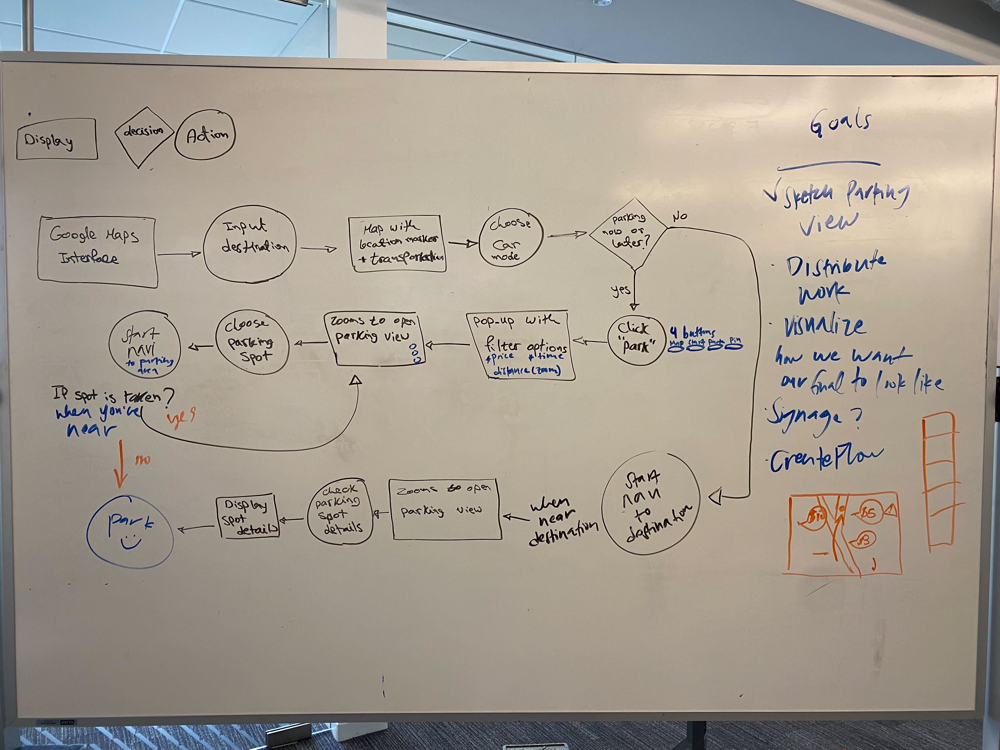
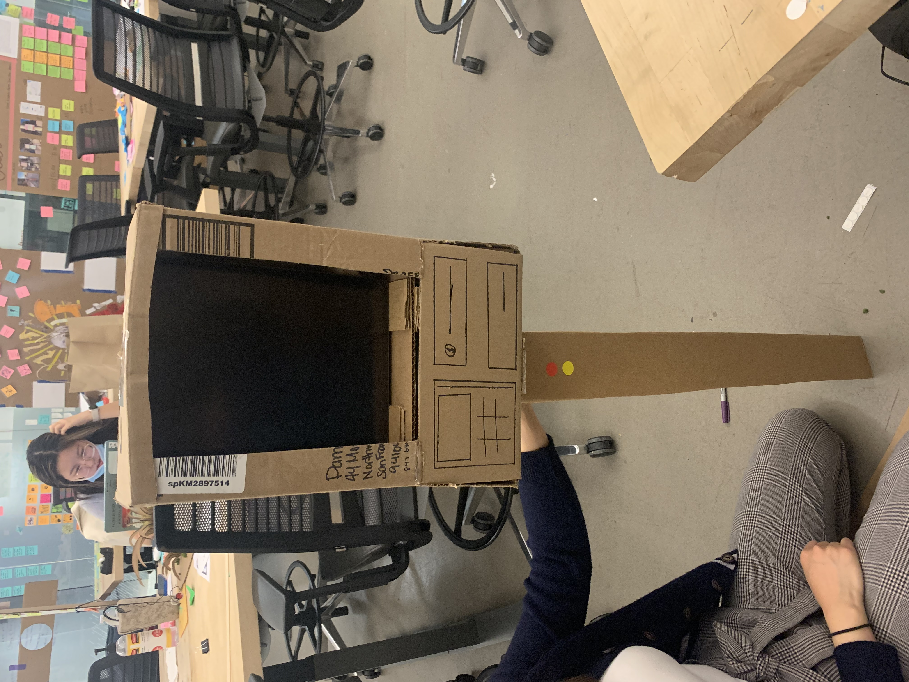
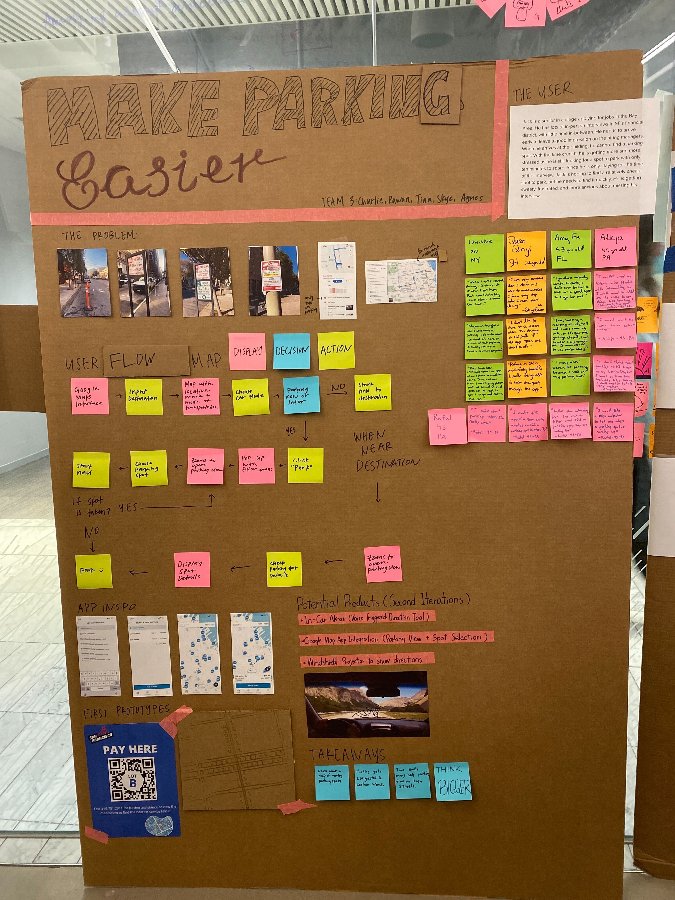

🙂 overview
Inspired by our experiences in San Francisco and back at our college campus, my group wanted to find a way to make the parking experience more efficient. Our classes were located in a building in FiDi, where we saw firsthand how congested the traffic would get and how street parking seemed to be impossible to find. As much as we knew it would be difficult, we saw it as an exciting challenge to think over.
🙂 process
After deciding on a HMW question, "How might we make the parking experience more efficient?", we created a user persona of a young adult coming in for job interviews faced with the scenario of needing to find short-term parking in busy areas.
Our initial prototypes looked at implementing a Google Maps extension that would better display available street parking and allow you to navigate to a space as a destination, creating better signage, and reorganizing hourly limits. We received feedback to think bigger, so my teammate and I sat down and got a bit silly with our ideas. A few notable ones being parking spaces that would use the functionality of a conveyor belt, social media parking app that rewarded users with parking tokens, and a high-tech solution to the parking meter.
Following multiple rounds of presentation and feedback rounds, we narrowed down our prototypes to improving the already functional Google Maps with a parking extension paired with a physical steering wheel model that would signal to the driver of the available parking spots with a vibration.



Whiteboarding the user journey + initial and revised protypes and iterations
Our final presentation + video of our user scenario
🙂 outcome
For our final presentation, we worked on creating a physical model of a car made from cardboard and mocking up a vibrating steering wheel (done with a vibrating dog collar and steering wheel cover). It was a fun interactive experience that helped us show how it solved the many struggles a driver often faces when it comes to parking, which we presented through a video.
It was a taxing process to think of a solution that even major cities have not figured out on their own yet! Nonetheless, I learned to look at various areas of a topic to address smaller issues rather than think of an one & done solution, such as thinking of solutions for parking signs to parking meters to the discovery process.